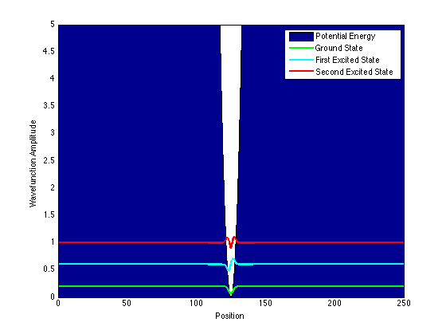

Contents
Prepare Workspace
A few lines to clear all variables, clear figures, and clear the workspace.
clc
clf
clear all
Assign Constants
hbar = 1; mass = 1; step_size = 0.05; number_of_data_points = 5000;
Assign Simulation Parameters
periodic_boundary_conditions = false;
Select Potential Energy
finite_square_well = false; finite_square_barrier = false; coulomb_potential = false; step_potential = false; harmonic_oscillator = true;
Calculate Kinetic Energy Matrix
kinetic = zeros(number_of_data_points); for i = 1:number_of_data_points kinetic(i,i) = 2; if i > 1 kinetic(i, i-1) = -1; kinetic(i-1, i) = -1; end end if periodic_boundary_conditions kinetic(number_of_data_points,1) = -1; kinetic(1,number_of_data_points) = -1; end kinetic_multiplier = hbar^2/(2*mass*step_size^2); kinetic = kinetic*kinetic_multiplier;
Calculate Potential Energy Matrix
potential = zeros(number_of_data_points); if finite_square_well for i = 0.4*number_of_data_points:0.6*number_of_data_points potential(i,i) = -1 + potential(i,i); end end if finite_square_barrier for i = 0.4*number_of_data_points:0.6*number_of_data_points potential(i,i) = 1 + potential(i,i); end end if coulomb_potential for i = 1:number_of_data_points potential(i,i) = -0.5/(i*step_size) + potential(i,i); if potential(i,i) < -0.5 potential(i,i) = -0.5; end end end if step_potential for i = 0.5*number_of_data_points:number_of_data_points potential(i,i) = 1 + potential(i,i); end end if harmonic_oscillator for i = 1:number_of_data_points potential(i,i) = 0.0002*(i - number_of_data_points/2)^2 + potential(i,i); if potential(i,i) >= 5; potential(i,i) = 5; end end end
Calculate Hamiltonian and Eigenvectors
hamiltonian = kinetic + potential; [eigenvectors, eigenvalues] = eig(hamiltonian);
Plot Eigenvectors
xs = linspace(0,step_size*number_of_data_points,number_of_data_points); vs = zeros(number_of_data_points,1); for i = 1:number_of_data_points vs(i,1) = potential(i,i); end ground_state_wavefunction = eigenvectors(:,1) + eigenvalues(1,1)*ones(number_of_data_points,1); first_excited_state = eigenvectors(:,2) + eigenvalues(2,2)*ones(number_of_data_points,1); second_excited_state = eigenvectors(:,3) + eigenvalues(3,3)*ones(number_of_data_points,1); area(xs, vs) hold on plot(xs, ground_state_wavefunction, 'g', 'LineWidth', 2) hold on plot(xs, first_excited_state, 'c', 'LineWidth', 2) hold on plot(xs, second_excited_state, 'r', 'LineWidth', 2) legend('Potential Energy', 'Ground State', 'First Excited State', 'Second Excited State') xlabel('Position') ylabel('Wavefunction Amplitude')